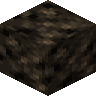
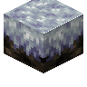
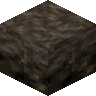
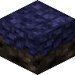
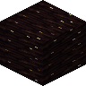
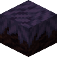

#eternal_starlight:terra_crystal_ingredients
物品标签 · 13 个已收录成员
标签成员 (13)
 泥土
泥土minecraft:dirt
 泥巴
泥巴minecraft:mud
 灰化土
灰化土minecraft:podzol
 砂土
砂土minecraft:coarse_dirt
 缠根泥土
缠根泥土minecraft:rooted_dirt

夜幕土eternal_starlight:nightfall_dirt

夜幕草方块eternal_starlight:nightfall_grass_block

夜幕灰化土eternal_starlight:nightfall_podzol

韧月草方块eternal_starlight:tenacious_nightfall_grass_block
 夜泥
夜泥eternal_starlight:nightfall_mud

发光夜泥eternal_starlight:glowing_nightfall_mud

幻草方块eternal_starlight:fantasy_grass_block
 松球花
松球花eternal_starlight:conebloom
使用该标签的配方


原始 JSON
{
"type": "minecraft:crafting_shaped",
"category": "misc",
"key": {
"C": {
"tag": "eternal_starlight:terra_crystal_ingredients"
},
"S": {
"item": "eternal_starlight:red_starlight_crystal_shard"
}
},
"pattern": [
" S ",
"SCS",
" S "
],
"result": {
"count": 1,
"id": "eternal_starlight:terra_crystal"
}
}